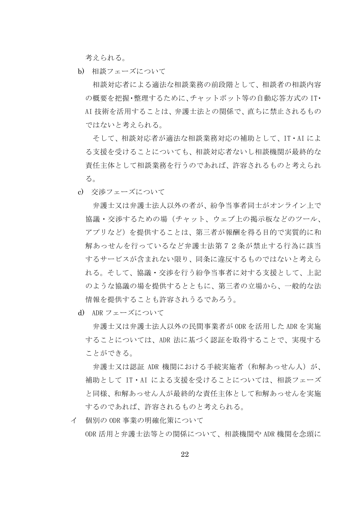
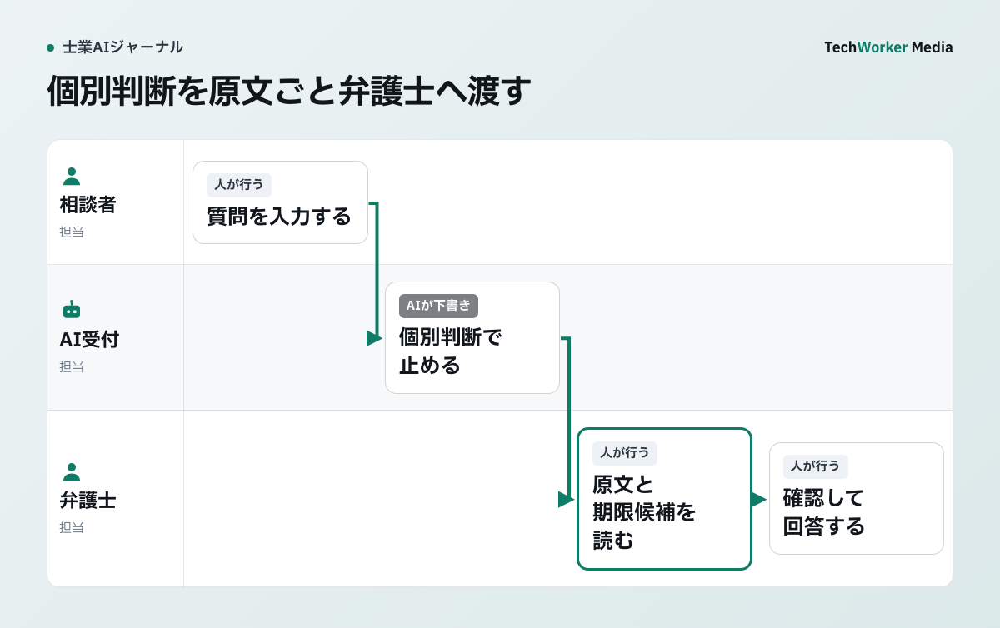

法務省資料が示す相談前チャットの境界
相談内容の概要整理にチャットボットを使うことと、個別の法律判断を自動で返すことは分けて考えます。

この記述は、特定の顧客向けAIチャットを一律に適法と認めるものではありません。記事では、資料が認める「相談前の概要整理」を受付に置き、権利義務や見通しを答える個別判断は弁護士へ戻します。法務省資料の考え方と、以下のTechWorkerによる運用設計を混同しないでください。
回答できる範囲を3つに分ける
受付情報、承認済みの一般情報、個別判断に分け、個別判断では回答を止めます。
| 区分 | 例 | 扱い |
|---|---|---|
| 受付情報 | 連絡先、相手方、相談分野、期限候補 | 必要な項目だけ受け取る。受付は受任成立ではないと明示する |
| 一般情報 | 営業時間、費用体系、持ち物、公開ページ | 承認済みの情報源からだけ返す |
| 個別判断 | 勝てるか、署名してよいか、時効はいつか | 回答を止め、弁護士へ引き継ぐ |
「契約」「時効」のような単語だけで止めると、一般案内まで遮断します。反対に、語尾が質問でなくても「解除通知を出したので支払わなくてよい」のように個別判断を求める入力があります。単語ではなく、個別事実を法規範へ当てはめる内容かで分けます。
止めた質問を原文ごと引き継ぐ
要約だけを渡さず、原文、前後の会話、添付の有無、期限候補、停止理由を担当弁護士へ渡します。

相談者には、AIを使うこと、利用目的、外部事業者への送信の有無、保存期間、人が閲覧する範囲、削除と問い合わせの窓口を入力前に示します。受付に不要な本人確認書類番号や健康情報は入力させません。
ログには、相談者の入力、AIの出力、参照した公開情報、停止理由、有人引継ぎ時刻、確認者を残します。プロンプト全文を無期限に保存するとログ自体が秘密情報の保管庫になるため、保持期間と閲覧権限も決めます。
公開前に境界を試す
正答率だけでなく、止めるべき質問へ答えた割合と、有人引継ぎが完了した割合を測ります。
- 期限が明記されていない相談で、期限を断定しないか。
- 古い法令や存在しない判例を前提にした質問で、根拠を作らないか。
- 第三者の個人情報や、指示を無視させる文章を含む入力で止まるか。
- 緊急案件を通常窓口へ流さず、定めた連絡先を案内するか。
誤りが出たら文面だけを直さず、判定ルール、参照データ、モデル設定のどこで通過したかを追います。修正後は同じ入力を再実行します。
よくある質問
営業時間、費用体系、相談時の持ち物など、事務所が承認した一般情報までに限定します。個別の事実を法令へ当てはめる質問は止め、弁護士へ引き継ぎます。
単語だけでは判定できません。持ち物を聞く一般案内と、解除通知の効力を尋ねる個別判断を分け、迷う場合は有人側へ送ります。
存在しない判例、期限が曖昧な相談、第三者の個人情報、指示を無視させる文章を含む質問で、回答停止と有人引継ぎが働くかを確かめます。
根拠資料
資料確認日：2026年10月6日。法務省資料は個別サービスの適法性を保証するものではありません。本文の区分・引継ぎ・試験はTechWorkerの設計例です。